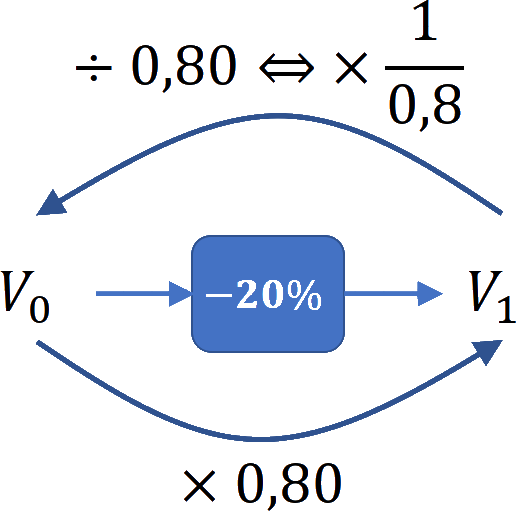

Proportion et évolution
Proportion
Rappels
Def
La proportion d’une sous-population (d’effectif $n$) parmi une population totale (d’effectif $N$) est :
$$\boxed{p=\dfrac{n}{N}}$$
En pourcentage :
$$\boxed{p_{\%}=\dfrac{n}{N}\times 100}$$
Rem
Pour calculer un effectif à l’aide d’une proportion, on peut utiliser :
- $\boxed{n = p \times N}$
- $\boxed{N = \dfrac{n}{p}}$
Méthodes
Methode
Calculer une proportion
Dans la classe de 2$^{\text{nde}}$ de $35$ élèves, $14$ élèves ont les yeux bleus.
$$p_{\%}=\dfrac{n}{N}\times 100=\dfrac{14}{35}\times 100=40$$
Ils représentent $40\%$ de la classe.
Methode
Calculer un effectif
Dans un lycée de $856$ élèves, $35$% mangent à la cantine le midi.
$$n = p \times N=\dfrac{35}{100}\times 856\approx300$$
Il y a $300$ élèves qui mangent à la cantine le midi.
Proportion de proportion
Propriete
Soit “$A$ inclus dans $B$” et “$B$ inclus dans $C$”.
Soit :
- $p_1$ la proportion de $A$ dans $B$
- $p_2$ la proportion de $B$ dans $C$.
Alors $\boxed{p=p_1\times p_2}$ est la proportion de $A$ dans $C$.
Methode
Calculer une proportion de proportion
Dans un car, il y a $40\%$ de scolaires et, parmi les scolaires, $60\%$ sont des filles.
La proportion de “scolaires filles” dans le car est :
$$60\%\text{ \ul{de} }40\%=0.6\times0.4=0.24$$
Évolution exprimée en pourcentage
Taux d’évolution et coefficient multiplicateur
Definition
On considère une valeur $V_i$ qui subit une évolution pour arriver à une valeur $V_f$.
Le taux d’évolution est égal à : $\quad \boxed{t=\dfrac{V_f-V_i}{V_i}}$
En pourcentage, le taux d’évolution est égal à : $\quad\boxed{t_\%=100\times \dfrac{V_f-V_i}{V_i}}$
Rem
- Si $t>0$, l’évolution est une augmentation.
- Si $t\lt 0$, l’évolution est une diminution.
Exemple
La population d’un village est passé de $\np{8500}$ à $\np{10 400}$ entre $2008$ et $2012$.
Le taux d’évolution de la population, en pourcentage, est :
$$t=\dfrac{V_f-V_i}{V_i}=\dfrac{10 400-8 500}{8 500}\approx 0.224\quad\text{soit}\quad+22.4\%$$
Propriete
- Faire évoluer une valeur de $\pm t\%$ revient à la multiplier par $\left(1+\dfrac{t}{100}\right)$
- $\left(1+\dfrac{t}{100}\right)$ est appelé coef. multiplicateur
$$\boxed{CM =\left(1+\dfrac{t}{100}\right)\quad\text{et}\quad t= \left(CM-1\right)\times 100}$$
Demo
Si on fait évoluer une valeur $V_i$ de $t\%$ alors sa valeur $V_f$ après l’évolution est égale à :
$$ \begin{aligned} V_f & =V_i + V_i\times \dfrac{t}{100} \\ ~ & =V_i\times\left(1+ \dfrac{t}{100}\right)\end{aligned} $$
Exemple
Le prix d’un survêtement est de $49$€. Il augmente de $8\%$.
Son nouveau prix est égal à :
- $CM =\left(1+\dfrac{t}{100}\right)=\left(1+\dfrac{+8}{100}\right)=1.08$
- Le nouveau prix est : $49\times1.08=52.25$€

Exemple
Le prix d’un polo est de $21$€. Il diminue de $12\%$.
Son nouveau prix est égal à :
- $CM =\left(1+\dfrac{t}{100}\right)=\left(1+\dfrac{-12}{100}\right)=0.88$
- Le nouveau prix est : $21\times0.88=18.48$€

Taux d’évolution global
Propriete
Si une grandeur subit des évolutions successives alors le coefficient multiplicateur global est égal aux produits des coefficients multiplicateurs de chaque évolution.
$$\boxed{CM_g=CM_1\times CM_2\times CM_3\times \ldots}$$
Exemple
Une valeur subit une baisse de $20\%$ puis une hausse de $30\%$.

Le coef.multiplicateur global est :
$$ \begin{aligned} CM_g & =CM_1\times CM_2 \\~&=0.8\times1.3\\~&=1.04 \end{aligned} $$
Soit une augmentation de $4\%$
Exemple
- En 2010, la boulangerie a augmenté ses ventes de $10\%$.
- En 2011, elle a diminué ses ventes de $5\%$.
On a :
- $CM_1=1+\cfrac{+10}{100}=1.1\quad\text{et}\quad CM_2=1+\cfrac{-5}{100}=0.95$
- Le coef. multiplicateur global est :
$$\begin{aligned}CM_g&=CM_1\times CM_2\\~&=1.1\times0.95=1.045\end{aligned}$$
- Soit une évolution de :
$$\begin{aligned}t_g&=(CM_g-1)\times 100\\~&=(1.045-1)\times 100=+4.5\%\end{aligned}$$
Taux d’évolution réciproque
Definition
On considère le taux $t$ d’évolution de la valeur $V_0$ à la valeur $V_1$.
On appelle évolution réciproque le taux $t’$ d’évolution de la valeur $V_1$ à la valeur $V_0$.

Propriete
L’évolution réciproque possède un coefficient multiplicateur inverse de l’évolution directe.
$$\boxed{CM_R= \dfrac{1}{CM}}$$
Exemple
Le coef. multiplicateur réciproque d’une baisse de $20\%$ est :
$$CM_R= \dfrac{1}{CM} \qquad= \dfrac{1}{0.8} \qquad=1.25$$
Soit une augmentation de :
$$ \begin{aligned} t_{R} & = \pa{CM_R - 1}\times 100 \\ ~ & = \pa{1.25 - 1}\times 100\quad & =+25\% \\ \end{aligned} $$
